キャラクター画面・ドット絵版 v007
A案の全身表示。16職×男女、静止立ち姿32体。128×128px透過・64px論理格子・最近傍表示。
実装画面プレビュー
32体の参照比較
左：既存立ち絵・戦闘原画・承認済みの顔。右：新作の静止立ち姿。
男性・剣士
128px PNG / 生成原画男性・拳闘士
128px PNG / 生成原画男性・侍
128px PNG / 生成原画男性・重騎士
128px PNG / 生成原画男性・忍者
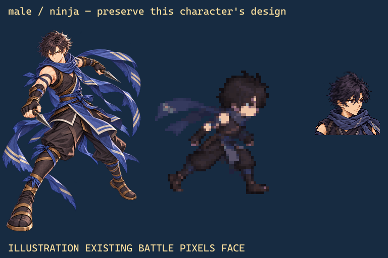
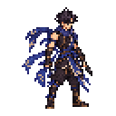
男性・アサシン
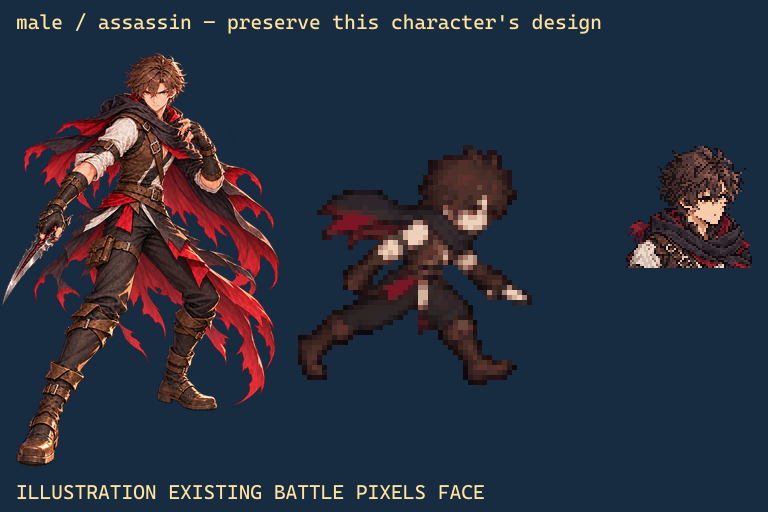
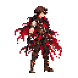
男性・弓使い
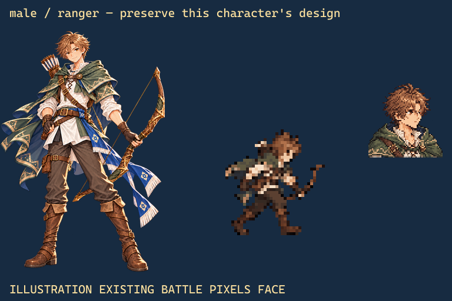
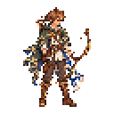
男性・魔法使い
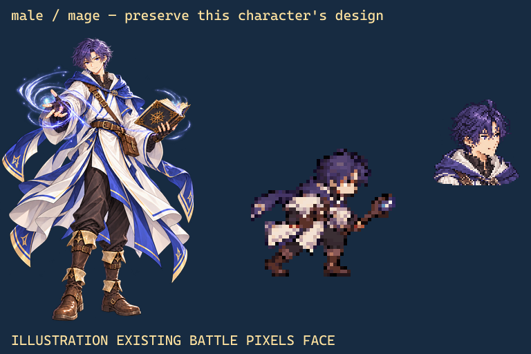
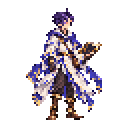
男性・ガンナー
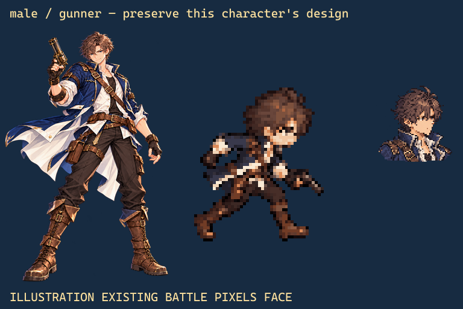
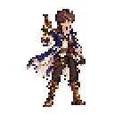
男性・魔剣士
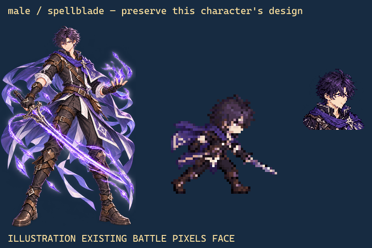
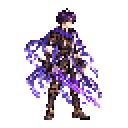
男性・陰陽師
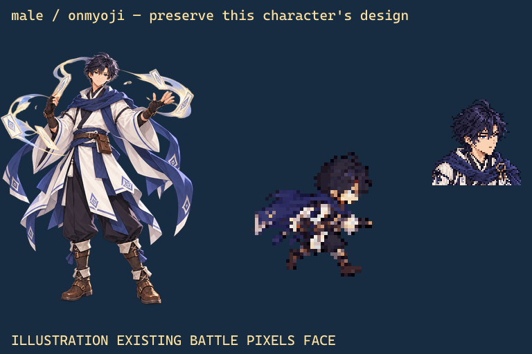
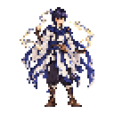
男性・鎌使い
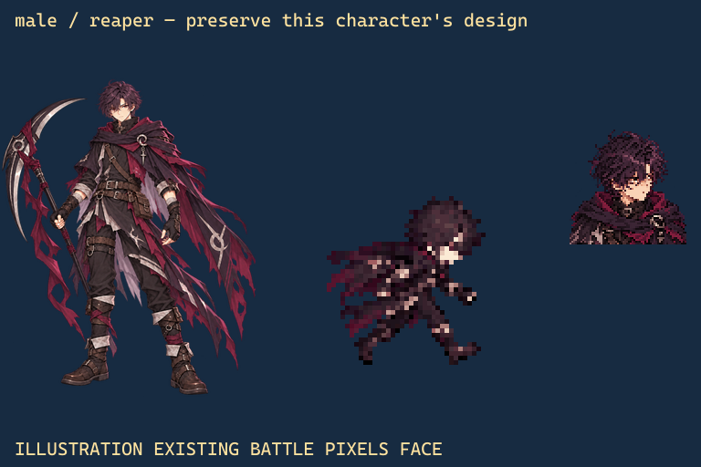
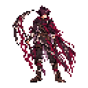
男性・天使
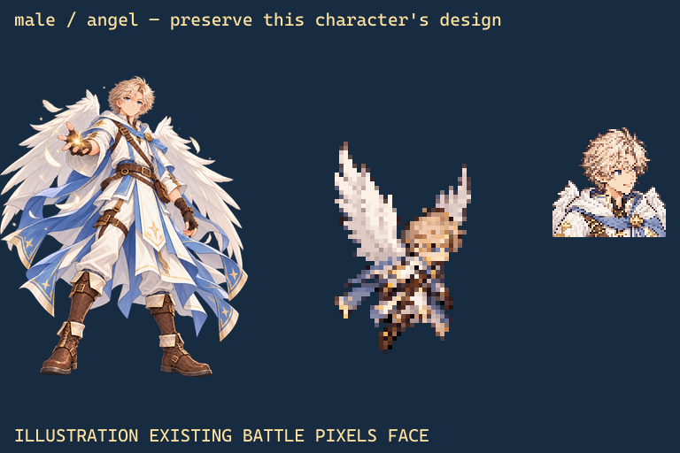
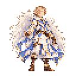
男性・悪魔
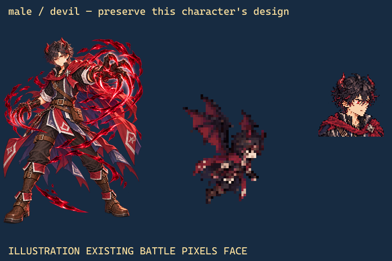
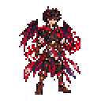
男性・ドラゴンナイト
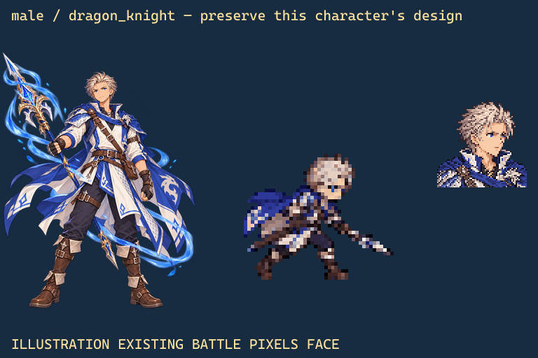
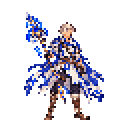
男性・バーサーカー
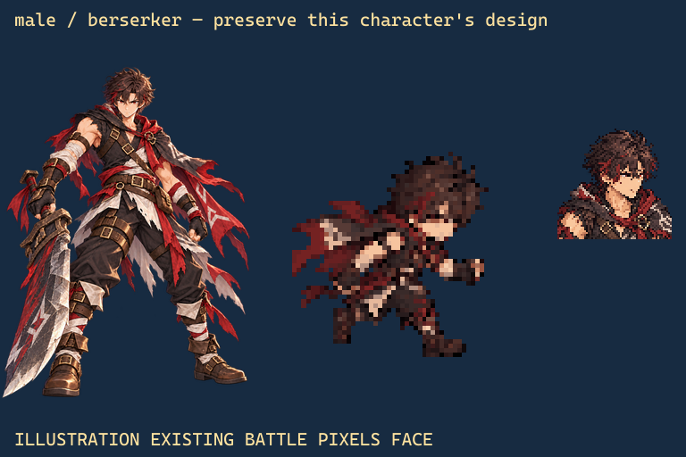
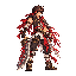
女性・剣士
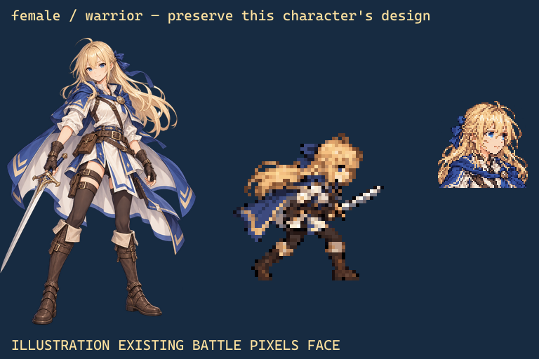
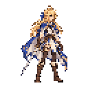
女性・拳闘士
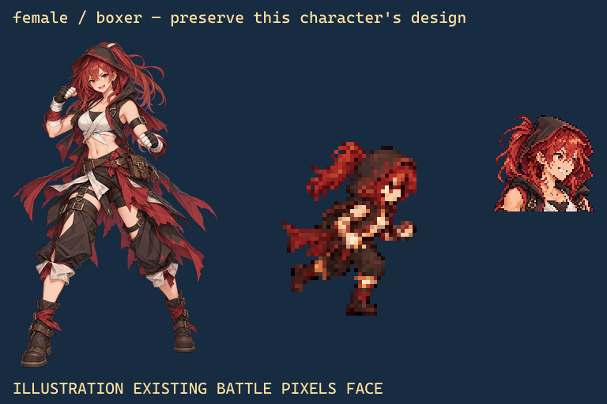
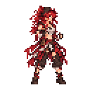
女性・侍
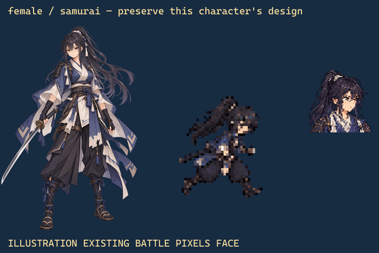
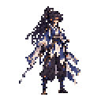
女性・重騎士
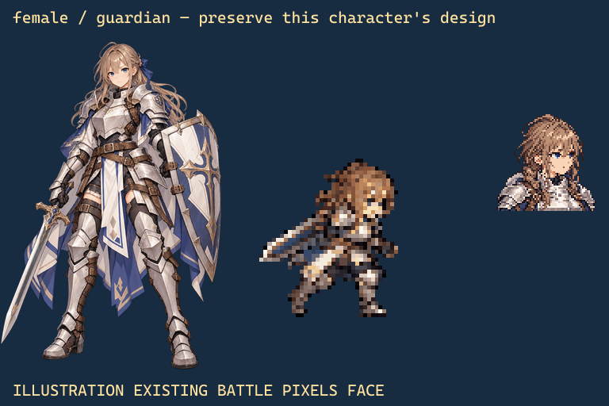
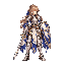
女性・忍者
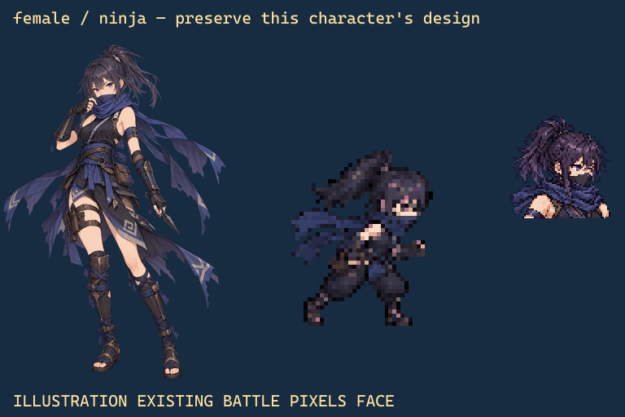
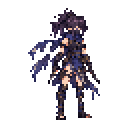
女性・アサシン
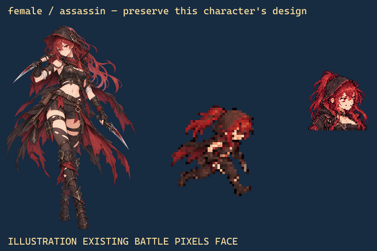
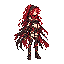
女性・弓使い
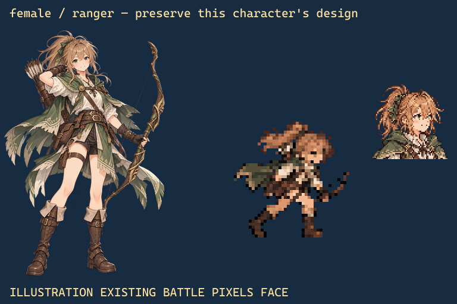
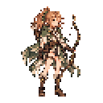
女性・魔法使い
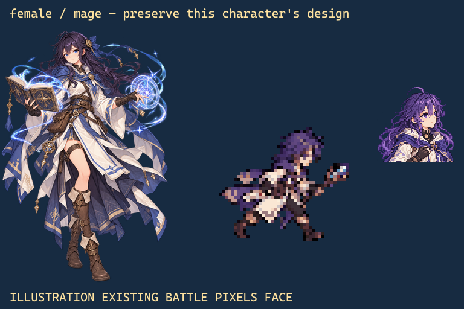
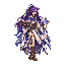
女性・ガンナー
128px PNG / 生成原画女性・魔剣士
128px PNG / 生成原画女性・陰陽師
128px PNG / 生成原画女性・鎌使い
128px PNG / 生成原画女性・天使
128px PNG / 生成原画女性・悪魔
128px PNG / 生成原画女性・ドラゴンナイト
128px PNG / 生成原画女性・バーサーカー
128px PNG / 生成原画